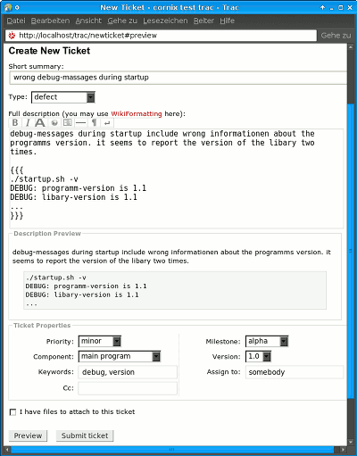

Wiki
Mitmachen
- Wikiartikel anlegen
- Howto anlegen
- Wiki-Referenz
- Wiki-Syntax
- Baustellen
- Artikelideen
- Ungetestete Artikel
- Ausbaufähige Artikel
- Fehlerhafte Artikel
- Rund ums Wiki
Konfiguration
- Backlinks anzeigen
- Exportieren
Ticket
Dieser Artikel wurde für die folgenden Ubuntu-Versionen getestet:
Dieser Artikel ist größtenteils für alle Ubuntu-Versionen gültig.
Trac bietet unter anderem ein Ticket-System, mit dem Fehler-Berichte verwaltet, Aufgaben verteilt und Erweiterungen geplant werden können. In diesem Artikel wird erklärt, wie man ein solches Ticket erstellt und beantwortet. Dazu braucht man lediglich einen Webbrowser.
Die verwendeten englischen Begriffe resultieren aus den Voreinstellungen im Trac und können je nach Projekt angepasst worden sein, auch können gleiche Begriffe unterschiedlich gewertet werden - man muss sich also einen Überblick über die Gepflogenheiten innerhalb eines Projektes machen und kann diese Anleitung ggf. nicht eins zu eins übertragen.
Erstellen¶
In Trac erreicht man über die Schaltfläche "New Ticket" das Formular zum Erstellen eines neuen Tickets.
Beschreibung¶
 Die erste Eingabe ist eine kurze Zusammenfassung des Ticket-Inhalts, die auch in der Ticket-Übersicht unter "View Tickets" erscheint. Sie sollte kurz sein und den wesentlichen Inhalt möglichst auf den Punkt bringen.
Die Auswahl des "Type" bestimmt die Art des Tickets:
defect- ein Fehlerenhancement- eine Erweiterungtask- eine wiederkehrende Aufgabe
Die "Full description" sollte eine möglichst ausführliche Beschreibung des Fehlers, der geplanten Erweiterung oder der neuen Aufgabe enthalten. Da sie Wiki-Formatierungen enthalten kann, können u.a. auch sehr einfach Links zu Quellcode-Dateien im Trac-Browser, sogar zu einzelnen Zeilen darin, in der Beschreibung verwendet werden.
Benutzt man in einem Projekt Gruppen-Accounts für den Zugang zum Trac, ist es sinnvoll in der Beschreibung auch den eigenen Namen bzw. Nick anzugeben, damit sich der Bearbeiter bei Rückfragen gezielt an eine Person wenden kann.
Einstellungen¶
Die "Ticket Properties" sind allgemeine Einstellungen zur Einordnung des Tickets im Projekt.
"Priority" bestimmt, wie wichtig das Ticket für das Projekt ist, wobei jedes Projekt die Prioritäten anders handhabt. Eine typische Einstufung sieht wie folgt aus:
trivial- unbedeutend, kann nebenbei erledigt werden, wenn jemand Zeit und Langeweile hatminor- nebensächlich, wird nebenbei erledigtmajor- hauptsächlich, der Focus der Entwicklungcritical- kritisch, z.B. ein Fehler, der regelmäßige Programmabstürze verursachtblocker- blockierend, hindert z.B. andere Komponenten an der Weiterentwicklung
"Component" bestimmt, welche Komponente des Projekts, sofern es mehrere gibt, betroffen ist.
"Milestone" und "Version" bestimmen die Einordnung in die "Roadmap".
"Assign to" bestimmt den Bearbeiter, ist einem nicht bekannt, wer diesen Bug bearbeiten soll, trägt man hier somebody ein. Jemand der für die Komponente zuständig ist, kann sich das Ticket dann selbst zuweisen. Wurde eine Zuweisung vom Bearbeiter akzeptiert, erscheint hinter seinem Namen in Klammern accepted.
Das Feld "CC" bietet die Möglichkeit Änderungen am Ticket, wozu auch Antworten zählen, mit einer E-Mail-Adresse zu abbonieren.
Zuletzt kann noch ein Häkchen bei "I have files to attach to this ticket" gesetzt werden, falls Dateien zusammen mit dem Ticket hochgeladen werden sollen.
Absenden¶
Über die Schaltfläche "Preview" erscheint die Vorschau der Beschreibung zwischen dem Eingabefeld und den Einstellungen, damit man alle Angaben noch einmal kontrollieren kann, bevor man mit "Submit ticket" das Ticket online stellt.
Beantworten¶
Ein Ticket erscheint (im Standard-Design) als gelber Kasten, in dem unten rechts die Schaltfläche "Reply" zu finden ist, über die man zum Antwort-Formular kommt. Dort kann man eine Antwort ("Comment") hinterlassen und/oder die Einstellungen die, bei der Erstellung gemacht wurden, verändern.
Abschließend kann man im Abschnitt "Action" entweder das Ticket im Status belassen in dem es ist ("leave as new"), es als Bearbeiter annehmen ("accept ticket"), den Status verändern ("resolve as...") oder es einem anderem Bearbeiter zu weisen ("reasign to...").
Bei der Veränderung des Status stehen verschiedene Möglichkeiten bereit:
fixed- Problem wurde behoben, Erweiterung eingebaut, etc.invalid- gegenstandslos, z.B. ein Fehler, der bei einem anderem Programm liegtwontfix- Problem wird nicht behoben, z.B. ein Erweiterungswunsch, der nicht umgesetzt werden soll/kannduplicate- es gibt bereits ein Ticket zum Sachverhalt (dieses sollte dann auch im Kommentar verlinkt werden)worksforme- "bei mir geht es" - zum Beispiel beim Wunsch nach einer Erweiterung, die schon enthalten ist
Verlinken im Trac¶
Ein Ticket wird mit seiner Nummer und vorangestellter Raute (#123) in Trac verlinkt. Wurde das Ticket geschlossen, erscheint der Link automatisch durchgestrichen.
Diese Revision wurde am 19. Dezember 2015 19:10 von aasche erstellt.
- Erstellt mit Inyoka
-
 2004 – 2017 ubuntuusers.de • Einige Rechte vorbehalten
2004 – 2017 ubuntuusers.de • Einige Rechte vorbehalten
Lizenz • Kontakt • Datenschutz • Impressum • Serverstatus -
Serverhousing gespendet von